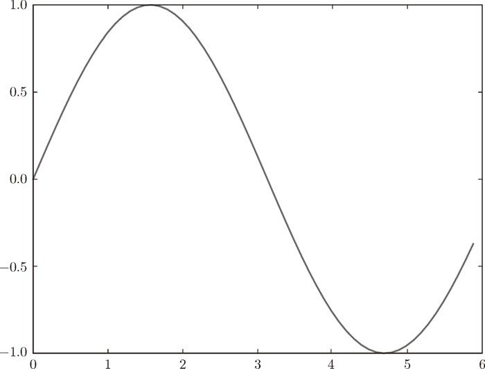
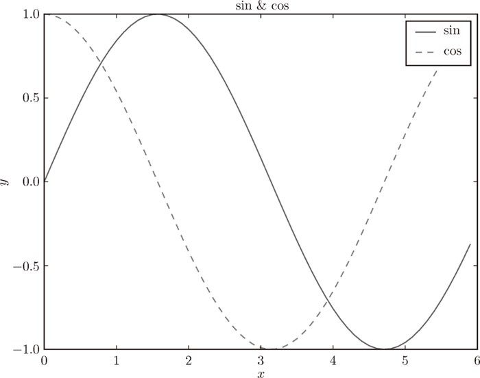

在深度学习的实验中，图形的绘制和数据的可视化非常重要。Matplotlib 是用于绘制图形的库，使用 Matplotlib 可以轻松地绘制图形和实现数据的可视化。这里，我们来介绍一下图形的绘制方法和图像的显示方法。
可以使用 matplotlib 的 pyplot 模块绘制图形。话不多说，我们来看一个绘制 sin 函数曲线的例子。
import numpy as np
import matplotlib.pyplot as plt
# 生成数据
x = np.arange(0, 6, 0.1) # 以0.1为单位，生成0到6的数据
y = np.sin(x)
# 绘制图形
plt.plot(x, y)
plt.show()
这里使用 NumPy 的 arange 方法生成了 [0, 0.1, 0.2,…, 5.8, 5.9] 的数据，将其设为 x。对 x 的各个元素，应用 NumPy 的 sin 函数 np.sin()，将 x、y 的数据传给 plt.plot 方法，然后绘制图形。最后，通过 plt.show() 显示图形。运行上述代码后，就会显示图 1-3 所示的图形。

图 1-3 sin 函数的图形
在刚才的 sin 函数的图形中，我们尝试追加 cos 函数的图形，并尝试使用 pyplot 的添加标题和 x 轴标签名等其他功能。
import numpy as np
import matplotlib.pyplot as plt
# 生成数据
x = np.arange(0, 6, 0.1) # 以0.1为单位，生成0到6的数据
y1 = np.sin(x)
y2 = np.cos(x)
# 绘制图形
plt.plot(x, y1, label="sin")
plt.plot(x, y2, linestyle = "--", label="cos") # 用虚线绘制
plt.xlabel("x") # x轴标签
plt.ylabel("y") # y轴标签
plt.title('sin & cos') # 标题
plt.legend()
plt.show()
结果如图 1-4 所示，我们看到图的标题、轴的标签名都被标出来了。

图 1-4 sin 函数和 cos 函数的图形
pyplot 中还提供了用于显示图像的方法 imshow()。另外，可以使用 matplotlib.image 模块的 imread() 方法读入图像。下面我们来看一个例子。
import matplotlib.pyplot as plt
from matplotlib.image import imread
img = imread('lena.png') # 读入图像（设定合适的路径！）
plt.imshow(img)
plt.show()
运行上述代码后，会显示图 1-5 所示的图像。
图 1-5 显示图像
这里，我们假定图像 lena.png 在当前目录下。读者根据自己的环境，可能需要变更文件名或文件路径。另外，本书提供的源代码中，在 dataset 目录下有样本图像 lena.png。比如，在通过 Python 解释器从 ch01 目录运行上述代码的情况下，将图像的路径 'lena.png' 改为 '../dataset/lena.png'，即可正确运行。